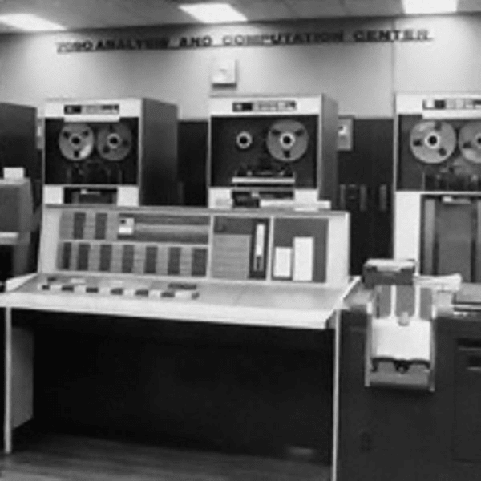
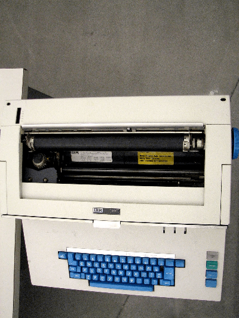
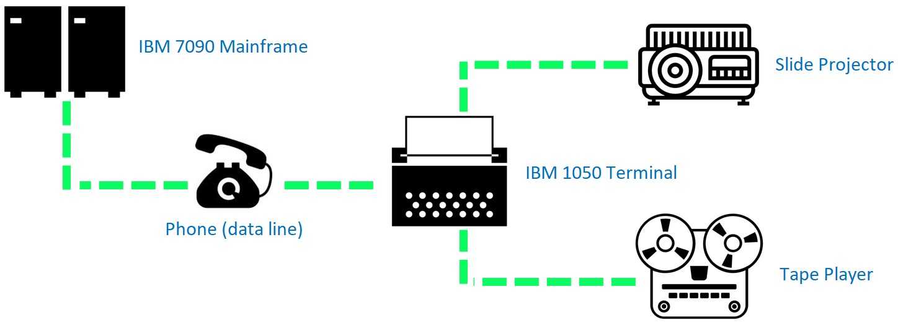
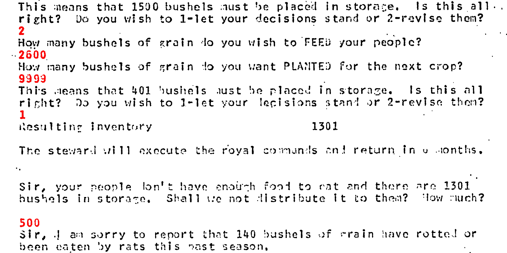

Play Like a Sumerian
For this article, I'm going to take us to the early 1960s and look at a game that, for quite a long time, was obscured, if not entirely absent, from a lot of game history. This game shared an interesting context with a wider education initiative that was going on at the same time.
The Education Context
To understand the context in which The Sumerian Game came to be, it's important to understand the education context in that time frame.
The early twentieth century had been characterized by a rapid expansion of high schools in rural America that were patterned on existing institutions located in larger cities. As education standards and curricular demands became more complex, these smaller school districts were often unable to keep pace with urban districts, mainly due to the latter having much larger on-hand staff.
The formation of intermediate school districts for resource pooling were an attempt to mitigate this problem. One of those districts, created by the New York State Legislature in 1948, was called the Board of Cooperative Educational Services (BOCES).
The stated goal of BOCES was providing shared educational programs and services to school districts within the state. The idea was that the program could help smaller school districts, particularly those in the rural areas, to pool their resources. This pooling would allow those districts to purchase or develop programs and services that were financially out of reach for the individual organizations themselves.
The Northern Westchester County BOCES Superintendent was a guy named Noble Gividen. Gividen's strong conviction was that the computer had a role to play in providing quality education. There was precedent for this. Since 1960, computer business simulations like The Carnegie Tech Management Game had been incorporated into college curricula. Gividen believed introducing similar programs into secondary education, suitably repurposed for the grade level, could provide major benefits to learning.
Gather Sources
Before getting into how this played out, it's worth noting that the main extant historical sources we have are the following:
- Two Computer-Based Economics Games for Sixth Graders; Wing, Richard L. The American Behavioral Scientist; Princeton, N.J. Vol. 10, Issue. 3 (Nov 1966)
- "The Production and Evaluation of Three Computer-based Economics Games for the Sixth Grade, Final Report", U.S. Department of Health, Education, and Welfare report, Wing, Richard L. (June 1967)
Both of the above sources were published relatively close to each other and give us a lot of detail. So let's use that detail to reconstruct what we can.
1966 Source
The 1966 source is available here as Two Computer-Based Economics Games for Sixth Graders.pdf.
This first paper talks about "the use of computer-based games with simulated environments as an instructional methodology" and provides a context note that we can unpack in this article.
The first games were undertaken jointly by BOCES and IBM during the summer of 1962 and continued into 1964 under the terms of Cooperative Research Project 1948. This project was followed by another, #2841, devoted entirely to the development of economics games.
Also mentioned are some key players:
The following people have developed games and/or are working on games ... Richard L. Wing, coordinator of curriculum research; Mabel Addis, teacher, Katonah Elementary School, Katonah, New York; Bruse Moncreiff, IBM Systems Development, Los Gatos, California.
This source also establishes the game itself, which is always nice in a historical source:
The first of the games developed at BOCES was the Sumerian Game, designed to teach sixth graders some basic principles of economics as applied to the time of the Neolithic revolution in Mesopotamia.
We also learn about the context of how this Sumerian Game was played:
... played on three IBM 1050 terminals, two equipped with modified carousel projectors and the third with an experimental random access film strip projector. During each game about seventy five pictures were projected at appropriate times. The terminals were connected by Dataphone to a special-purpose 7090 Computer which was under supervision of a Time Sharing Monitor system (TSM).
We also learn about the language The Sumerian Game was coded in:
The coding language used was Fortran Assembly Program (FAP) with a few additional control cards for file loading purposes. To give some idea of the scope of the programs, the Sumerian Game uses about 15,000 lines of instructions and approximately 37,000 memory places in the computer system.
We also learn when the initial games were played:
From October 1965 to March 1966, twenty-five sixth-grade students from the Mohansic School in Yorktown Heights, New York, played the two games on three terminals at the Center for Educational Services and Research of BOCES.
The paper recounts how play started for the students:
During an introductory programmed tape and slide presentation the child playing the game sees himself as a ruler's son in the city-state of Lagash about 3500 B.C. At the conclusion of this orientation, the rules and the initial economic conditions are given to the child by means of typewriter terminals controlled by the computer. He then assumes the role of Luduga I, priest-ruler of Lagash.
We learn that the game was broken into a game loop of harvests, each of which were to span six months of game time. How the game plays out is largely dependent on the decisions the student makes at each harvest/turn. The game was apparently broken up into three phases:
The rule of the first Luduga is devoted to the solution of problems pertaining to an agricultural economy. In the second phase of the game the child, as Luduga II, is given the opportunity to apply his surplus grain to the development of crafts. In the third and final stage he is introduced to trade and the more complex problems which confront a changing economy.
Thus we learn quite a bit from this source.
1967 Source
I have provided this source as the full report as well as an abbreviated version that covers the highlights.
The 1967 source confirms that Doctor Gividen wanted to work with IBM regarding research into "automation in education." By this was meant the idea of computer-assisted learning. This led to the idea of using simulations on computers to help instruct students.
The immediate result was a summer workshop that was held in July and August of 1962. This was held by the Advanced Systems Development Division of IBM and included BOCES. The workshop was led by Bruse Moncreiff and James Dinneen (both from IBM) and Dr. Richard Wing, who was the director of the Division of Curriculum Development at the Northern Westchester County BOCES and author of the above-mentioned sources.
Wing's report says:
Ten teachers from the public schools of Northern Westchester began the study of eight learning units for which individual tutoring could be provided through the aid of audio-visual equipment controlled by a computer.
One of those teachers was Mabel Addis Mergardt, a fourth-grade teacher at Katonah Elementary School.
The above is a newspaper photo from 26 August 1984 of Mabel Addis at the Somers museum. Mabel was a longtime chair of the Historical Society of Somers. As far as I know, this is one of the few pictures of Mabel, who died in 2004.
This workshop led to the creation of Cooperative Research Project 1948, titled "Use of Technical Media for Simulating Environments to Provide Individualized Instruction." This lasted from February 1963 to August 1964. The results of the project were reported in 1965.
The source of those results from 1965 is the following:
- Wing, R. "Use of Technical Media for Simulating Environments To Provide Individualized Instruction." Cooperative Research Project No. 1948. Washington, D.C.:U. S. Office of Education, 1965. p. 4.
I've struggled to find an extant copy that you don't have to go to a university to get but the details of the source are included in an ERIC entry.
What we do know is that in 1965, The Sumerian Game was played for the first time by twenty-six sixth-grade students from Mohansic Elementary School in Yorktown Heights and the results report is in that above source.
We know a bit of how this project developed due to Bruse Moncreiff's "The 'Sumerian Game': Teaching Economics with a Computerized P.I. Program" published in Programed Instruction in February 1965. I have not been able to find a full source for that but you can see a bit of it that I've been able to reconstruct, only partially, from other sources.
We see there that Moncreiff had been inspired by a few things for the project he proposed. One of those inspirations was his prior research, particularly a paper written by Richard Meier called "Teaching through Participation in Micro-simulations of Social Organization." Another of Moncreiff's inspirations was the basic mechanics of the board game Monopoly. Finally, Moncreiff also had an interest in ancient Sumerian civilization.
All of these inspirations contributed to Moncrieff proposing a simulation based on an economic model for a civilization, with the pedagogical purpose being to teach basic economic theory. This ultimately led to The Sumerian Game. Mabel Addis was apparently heavily in favor of this particular focus.
The report mentions that Project 1948 was followed "in two-weeks time" by Cooperative Research Project 2841, which is detailed in the sources I mentioned at the start.
What this means is that there are actually two versions of The Sumerian Game: one that was produced in 1964 and another that was produced in 1966. We can learn about both versions from reading the 1967 report. From that report we learn that the "instructional version of the game was written by Mrs. Mabel Addis" and that "William McKay of IBM programed the game for the computer."
1964 Version
The core design of the game was focused on illustrating the factors aiding the development of Mesopotamian civilization through a land management simulation that would be played by a single student. Worth noting is this bit about how play started:
Preliminary to the programed play of the Sumerian Game there is an introductory lecture. The delivery of the lecture is made utilizing a tape recorder driving a conventional slide projector. During this introduction the student learns that he will play the role as ruler of a city-state in the ancient land of Sumer about 3500 B.C. This introductory presentation takes approximately 20 minutes.
This snippet helps us understand the architecture of the game. The game was written in FORTRAN for an IBM 7090 time-shared mainframe computer.
Commands were entered and results printed with an IBM 1050 teleprinter.
Thus did the architecture of the game look like this:
The IBM 7090 computer system used for the game was located in the facilities of the IBM East Coast Advanced Systems Development Division in Yorktown Heights.
The game would take place around 3500 BCE, over the reign of three kings of the Sumerian city-state of Lagash: Luduga I, Luduga II, and Luduga III. Here is how the transcript starts:
Imagine that you have just been made Ruler of Lagash, a City-State of Sumer, in the year 3500 B.C. Twice yearly your Royal Steward, Urbaba, will report to you the economic condition of the kingdom. Guided by these reports, you will decide the use of your grain and other resources, trying to keep your population stable and well fed.
And who is Luduga? Some have thought it might be based on Lugal-dalu although that would make the timeline of 3500 BCE off by a thousand years or so. Incidentally, the "Royal Steward" in the game is given as Urbaba and some have taken that to be based on Ur-Baba but, again, the timing would be off. But it's worth remembering that this was not a historical simulation but more of an economic and resource simulation.
The actual interaction options within this arrangement of technology — meaning, both gameplay and interface — were reduced to entering commands via the keyboard with the output being printed to a paper roll clamped onto the terminal. These interactions are preserved in the sample printouts that are still available. In the following image, for example, the red of the player inputs has been reconstructed according to the information presented in the 1967 report.
This entire architecture had the disadvantage that not much information could be transmitted at the same time, because reading longer texts would have become extremely impractical. In addition, the storage capacity of the mainframe was very limited from today's perspective. Storing larger amounts of information that weren't relevant to the program as it had to be played would have been difficult for reasons of space. This is why both visual and auditory parts of the game were sourced to other devices that were coupled to the terminal and could be remotely controlled from the mainframe.
Playing the 1964 Version
The situation presented to the student is given as such:
We have harvested 5,000 bushels of grain to take care of 500 people. How much of this grain shall be set aside for the next season's planting, and how much will be stored in the warehouse? The remainder will be given to the people to eat.
The student then receives what they get to know very well as they play the game: a Seasonal Population and Harvest Report.
Total population now 500
Total farm land under cultivation, acres 600
Total grain in inventory, bushels 900
one season old 900
two seasons old 0
three seasons old 0
Total grain just harvested, bushels. 13000
Total resources, harvest + inventory. 22000
You must now decide how to use your resources.
How many bushels of grain do you wish to feed your people?
>> 1000
How many bushels of grain do you want planted for the next crop?
>> 2000
The >> elements above are examples of what the student player would enter in. So, with these inputs by the student, the game would then respond with:
This means that 10000 bushels must be placed in storage.
The student has a chance to revise their inputs or accepts them. After the students accept their selections, the game would calculate the effect of their choices on the population for the next round and then provide the student with a seasonal report. That would look something like this:
Population at previous report 514
Change in population 12
Total population now 526
The quantity of food the people received last season was satisfactory.
Harvest last season 15829
Harvest this season 15829
Previous inventory 2620
Change in inventory -456
Present inventory 2164
Total resources, harvest + inventory 17993
You must now decide how to use your resources.
How many bushels of grain do you wish to feed your people?
>> 9500
How many bushels of grain do you want planted for the next crop?
>> 4500
With the above inputs by the player, the game would respond with the following:
This means that 1829 bushels must be placed in storage.
Resulting inventory 3993
Here the value of bushels is from 15829 - (9500 + 4500) and the resulting inventory is from 17993 - (9500 + 4500).
The above essentially shows the game loop, which is made up of allocation decisions by the student. The game rounds start in 3500 BCE and were meant to represent seasons. Each "turn" (cycle, harvest) represents six months in the fictional life of the ruler during each phase of the game. The victory conditions are called out in the report:
Good play is signified by a growing population and increasing harvests; poor play, by a decreasing population and/or a decreasing harvest.
The focus is thus really on that changing population. As population expands, the student has to consider how to support that population. Thus a key mechanic of the game, as it were, involved how population change was related to food consumption. The breakdown, as given in the report, is a series of variables:
P = population ΔP = change in population (over one season) F = bushels of grain set aside as food (for one season) X = food per person (for one season)
This means X is equal to F / P. But, crucially, the ratio of ΔP / P is provided in the following graph from the paper.
After each round, the simulation would then select whether to report several events that could happen. For example, the city could be struck with some random disaster, such as a fire or flood. That disaster might destroy a percentage of the city's population and harvest. Another scenario might be that a certain percentage of the stored grain was lost to rot or rats.
It's worth noting that not all possible scenarios were doom and gloom. It was also quite possible that the game would report a technological innovation which would have a positive effect on subsequent rounds. An example of this might be a reduction in the amount of grain that may spoil or a reduction in the number of farmers needed for each acre of land.
All of this worked together to create a dynamic, but essentially bounded, problem space for students to interact in. For example, there were certain defined formulas that were used to compute the harvest. These were without taking account of the disasters or innovations. The 1967 report gives the following variables to consider:
H = number of bushels in harvest S = number of bushels of seed planted L = number of acres of land cultivated W = number of workers on the farm lands
From those, an example formula breakdown looks like this:
IF (too much seed not planted) S <= 6 L AND IF (there are enough farmers) W > L / 4 THEN H = 4S
As the gameplay evolved, so too did the calculations used to determine what result the student's actions had. A good example is that once the player gained access to fertilizer, the equation for the harvest would change from the above H = 4S to H = 5S where the harvest would now equal five times the amount of seed planted.
During the first reign and thus the first segment of the game, the student player would develop farmland and grow and store crops to balance population expansion. This would include managing the stockpiling of sufficient resources to be able to survive droughts and other natural disasters. This reign was broken up into a series of limited rounds.
During the second reign, the player would change their focus to investing their food supply into developing technology and culture. The player can also apply workers towards the development of several crafts, which in turn can result in innovations. Finally, during the third reign, the student player was asked to interact with other city-states and expand their civilization through trade and military might.
The 1967 report provides the following context for what I just said above:
The rule of the first Luduga is devoted to the solution of problems pertaining to an agricultural economy. In the second phase of the game, the child as Luduga II is given the opportunity to apply his surplus grain to the development of crafts. In the third and final stage he is introduced to trade and the more complex problems which confront a changing economy. The rate and trend of development are dependent upon the wisdom of the child's decisions.
An interesting aspect to consider is that In the second and third segments of the game, the city's population and grain are adjusted to pre-set levels. These levels are set regardless of the student's performance in the prior segment. This is explained in the report the following way:
No matter how a student has directed the city-state through his reign as Luduga I or II (he may, for example, have increased his population by 20% or decreased it by30%), he would start his play in the role of Luduga II or III With a standard set of values for the state-of-the-nation variables.
The idea here was to represent that some time has passed since the decisions of the prior ruler. The student then once again plays through a series of rounds in each segment with those pre-set levels as their starting point.
1966 Version
Based on the output of the pilot project, for those students who play-tested the game in 1965 under Project 1948, changes were made to the game.
Some changes were related to the pacing and duration. For example, the first round — that of Luduga I — was reduced to thirty while those in the second round were redsuced to ten. There were also some changes to the text generated during the game, with the idea of making it a little less repetitive.
Another update to the second round was that the student was no longer required to make choices around grain allocation. Instead the student only had to make decisions about applying workers to farming or crafts. Essentially the agricultural component was removed from the second segment of the game and the rationale here is that Addis believed that once the student showed mastery of this in the first segment, they should be allowed to focus on the second segment elements of gameplay alone.
But perhaps most interesting of all were some updates to the supporting elements of the game. From the 1967 report, we read:
Visuals, formerly used as motivational and illustrative devices, were improved to contribute directly to learning. Graphs and charts were included to enhance and review the explanation of economic concepts. These concepts were spelled out further by the introduction of mid-season court bulletins.
This almost sounds a bit like the "feelies" that were a part of Infocom games, that would come quite a bit later in history. We also read about some of the more multimedia elements.
Since the earlier approach relied heavily upon the printed word as a means of communicating with the student, a diversification in the range of learning input was introduced by the use of the tape recorder. In a series of problem-solving situations the ruler was given the opportunity to listen to a tape which recorded the simulated discussion of a cabinet of advisors. At the conclusion of each tape he was redirected to the printed word of the terminal to record his decisions. The introduction of an audio court news bulletin also relieved the reading routine and added interest to the play.